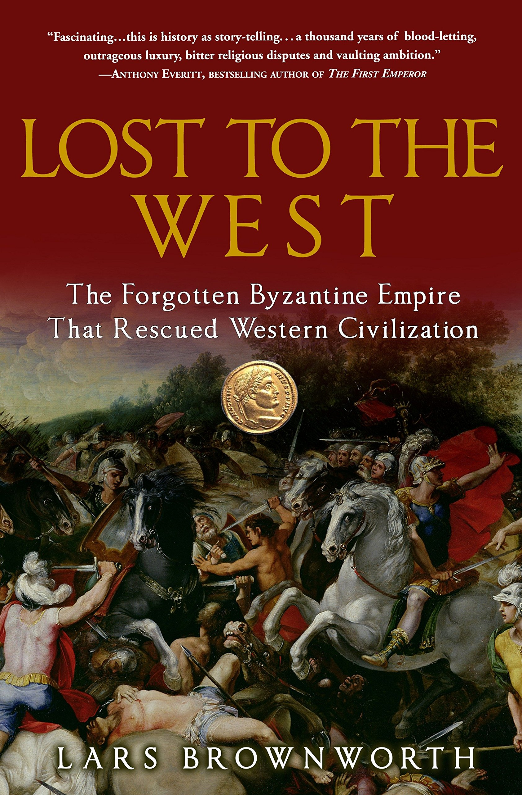
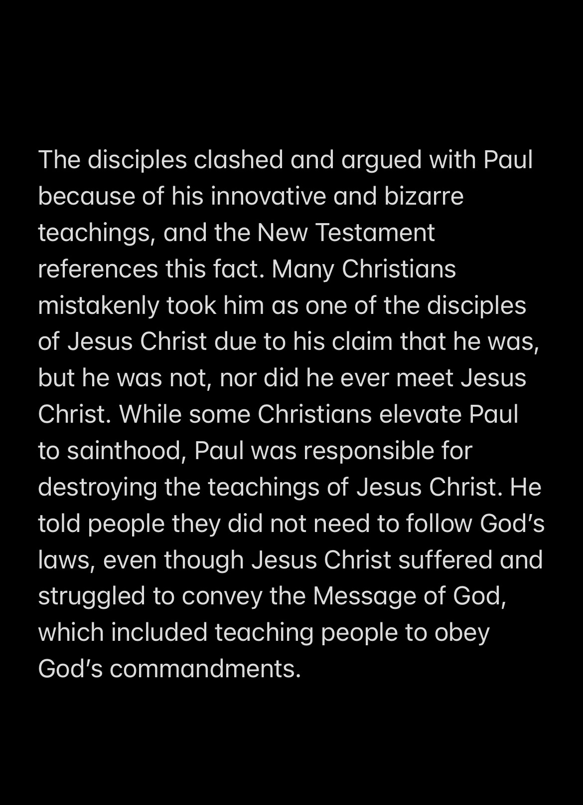
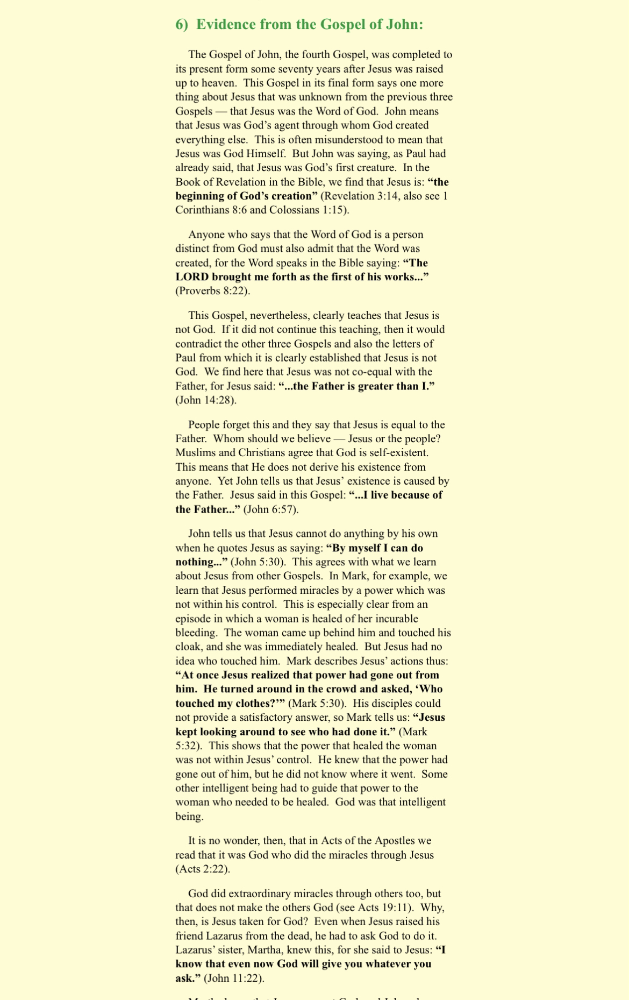
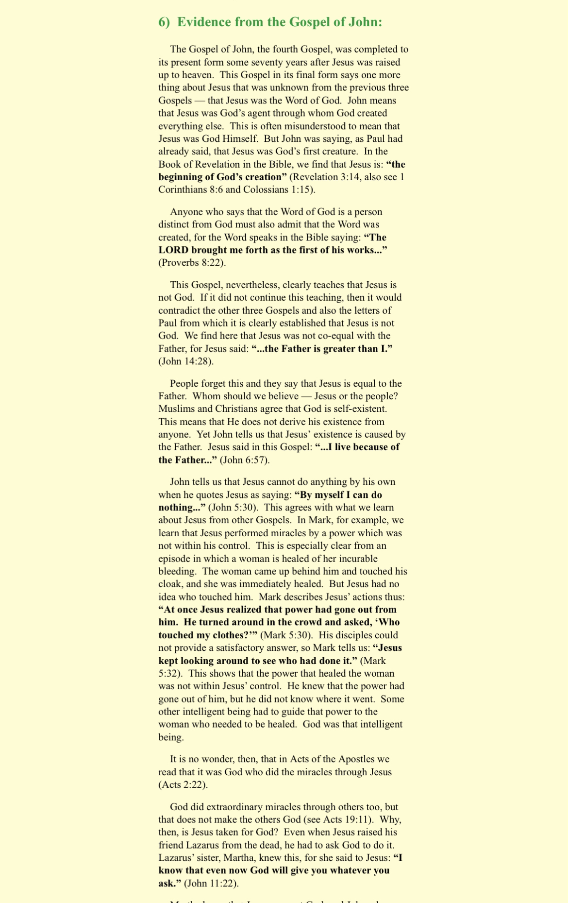

Sam Shamoun says the n-word
ight lets start now.
Metaphysics and Logic of the Trinity by Dale Tuggy
https://www.oxfordhandbooks.com/view/10.1093/oxfordhb/9780199935314.001.0001/oxfordhb-9780199935314-e-27
Responses to the Christians by Karkooshy
https://keystotheunseen.com/2017/12/01/the-trinity/
https://keystotheunseen.com/2018/06/19/the-trinity-ii/
https://keystotheunseen.com/2018/01/20/al-razi-debate-with-a-christian/
https://keystotheunseen.com/2017/11/28/the-incarnation-of-the-immutable-god/
IZHAR-UL-HAQ The Truth Revealed
by Maulana M. Rahmatullah Kairanvi
Jesus: Man, Messenger, Messiah
by Abu Zakariya
Poem to Christians
-Ibn Qayyim (رحمه الله)
https://youtu.be/nxmnXBo_Eo0
The logical proofs that demonstrate the incoherencies of the (Impossible to exist) Triune God
https://drive.google.com/file/d/1IxVr9qAETbYES2ZLw2DWTcyA6JVx0i_Q/view?usp=drivesdk
Arguments_against_Christianity.pdf
Al-Ghazali_Refutation_of_Christianity-1.pdf
en_Is_Trinity_Doctrine_Divinely_Inspired.pdf
Al-Radd_al-jamilA_Fitting_Refutation
Matthew 27:5 - Revised Standard Version (RSV)
And throwing down the pieces of silver in the temple, he departed; and he went and hanged himself.
Acts 1:18 - Revised Standard Version (RSV)
(Now this man bought a field with the reward of his wickedness; and falling headlong he burst open in the middle and all his bowels gushed out.
Both verses are talking about Judas
What the site says to this contradiction
These accounts are not contradictory, but mutually complementary. Judas hung himself exactly as Matthew affirms that he did. The account in Acts simply adds that Judas fell, and his body opened up at the middle and his intestines gushed out. This is the very thing one would expect of someone who hanged himself from a tree over a cliff and fell on sharp rocks below.
however; this is untrue
1) Contradiction about what Judas does with the money
2) Contradiction about death
Acts says Judas fell headfirst
if he hanged himself, then his body decayed or anything, his corpse would have dropped
how does one's corpse from hanging fall headfirst?
Then the money
Matthew says he threw the money away
Acts says he purchased a field away
Testing Crucifixion
 Crucifixion notes Part 1:
History is a probability. To know past events we use twi methods.
1)Historiography.
2)Archaeology.
There is NO archaeological evidence for the crucifixion of christ.
If they appeal to Josephus, Tacitus, and Lucias.
Say: the earliest manuscripts of the writings of Josephus and Tacitus are after the time of the prophet PBUH. The manuscript are around the 9th century and onwards.
The earliest christians did NOT appeal to the writings of josephus and tacitus. The first christian to appeal to them was the 4th century church father Eusebius.
The critical people like Lucious and Celsus were mocking the christians for their BELIEFS.
They NEVER made the claim that the crucifixion is a fact in history or something that happened. It’s only something they mention that what the Christians BELIEVED in. ((So they were recording the beliefs of the Christians not recording events or facts that happened in history.))
Lucian says that Xtians BELIEVE in a crucified sage/saviour. He never claims that it is a FACT in history.
Josephus:
If josephus fully believed that christ died and fully resurrected and did all these miracles, why didn’t he became a christian? ((I mean Xtians say apostolic gift were given to the first christians yet josephus never actually becomes convinced or even interested in Xtainity?))
Tacitus also records what they believed in. He doesn’t make a claim that it’s a fact in history or that it happened in history. Rather records what they BELIEVE in.
—
Funnily, these people actually NEVER mention the resurrection and they were recording that the christians believed in. ((So why didn’t they record the resurrection if the christians didn’t believe in it?))
The Non Xtian sources were NEVER witnesses to the crucifixion NOR did people who “witnessed” the crucifixion went to Josephus tacitus etc... and testified these to them. NEVER.
They ONLY recorded what christians believed in.
So basically it is what the people said meaning it was hearsay but NOT that it is a fact of history.
This actually confirms the Quran as it says “it appeared so”.
The only christian church father to appeal or mention Josephus wad Eusebius. Why didn’t the church fathers before him didn’t mention-appeal to josephus?
NT:
In the Gospel of Matthew the crucifixion passages come from the 4-5th century CE. That is the manuscript evidence.
In the Gospel of Mark the crucifixion passages also come from the 4-5th century CE. And some verses from the 6th century and some from the 19th century. LOL
In the Gospel of Matthew 27:50, where it allegedly says that Jesus died on the cross, in the greek it actually never says he “died” or has the greek word for “death”. So translations that say “die” is their own interpretation. Likewise with Mark.
And also, the gospel of Mark says that the high priests tore their clothes off but in the torah it is forbidden for a priest to tear his clothes(Leviticus 21:10). So there is an inconsistency with the narrative here. Levi 21:10 contradicts Mark 14:63.
Crucifixion notes Part 1:
History is a probability. To know past events we use twi methods.
1)Historiography.
2)Archaeology.
There is NO archaeological evidence for the crucifixion of christ.
If they appeal to Josephus, Tacitus, and Lucias.
Say: the earliest manuscripts of the writings of Josephus and Tacitus are after the time of the prophet PBUH. The manuscript are around the 9th century and onwards.
The earliest christians did NOT appeal to the writings of josephus and tacitus. The first christian to appeal to them was the 4th century church father Eusebius.
The critical people like Lucious and Celsus were mocking the christians for their BELIEFS.
They NEVER made the claim that the crucifixion is a fact in history or something that happened. It’s only something they mention that what the Christians BELIEVED in. ((So they were recording the beliefs of the Christians not recording events or facts that happened in history.))
Lucian says that Xtians BELIEVE in a crucified sage/saviour. He never claims that it is a FACT in history.
Josephus:
If josephus fully believed that christ died and fully resurrected and did all these miracles, why didn’t he became a christian? ((I mean Xtians say apostolic gift were given to the first christians yet josephus never actually becomes convinced or even interested in Xtainity?))
Tacitus also records what they believed in. He doesn’t make a claim that it’s a fact in history or that it happened in history. Rather records what they BELIEVE in.
—
Funnily, these people actually NEVER mention the resurrection and they were recording that the christians believed in. ((So why didn’t they record the resurrection if the christians didn’t believe in it?))
The Non Xtian sources were NEVER witnesses to the crucifixion NOR did people who “witnessed” the crucifixion went to Josephus tacitus etc... and testified these to them. NEVER.
They ONLY recorded what christians believed in.
So basically it is what the people said meaning it was hearsay but NOT that it is a fact of history.
This actually confirms the Quran as it says “it appeared so”.
The only christian church father to appeal or mention Josephus wad Eusebius. Why didn’t the church fathers before him didn’t mention-appeal to josephus?
NT:
In the Gospel of Matthew the crucifixion passages come from the 4-5th century CE. That is the manuscript evidence.
In the Gospel of Mark the crucifixion passages also come from the 4-5th century CE. And some verses from the 6th century and some from the 19th century. LOL
In the Gospel of Matthew 27:50, where it allegedly says that Jesus died on the cross, in the greek it actually never says he “died” or has the greek word for “death”. So translations that say “die” is their own interpretation. Likewise with Mark.
And also, the gospel of Mark says that the high priests tore their clothes off but in the torah it is forbidden for a priest to tear his clothes(Leviticus 21:10). So there is an inconsistency with the narrative here. Levi 21:10 contradicts Mark 14:63.
Crucifixion notes Part 2:
These things are NOT historically accurate:
1)the rising of saints after the crucifixion.
2)How can Jesus be tried for “blasphemy” when in Jewish Traditions they give you 24 hours to think about what you done and to repent meaning they give u a 24 hour chance.
3)you cannot try someone on the eve of a festival
4)which roman tradition allowed the releasing of prisoners??or on the Passover
Tacitus Josephus and Lucian were all written at the same exact time where gnostic gospels were being written. They are contemporaneous with each other.
((The christians will understand what this means as gnostics believed that jesus was a ghost and phantom and Josephus Tacitus Lucian were “written” at the a time where also gnostic texts were written?))
The quoted of Josephus which christ is mentioned is the russian version which is universally rejected. The other writings of Josephus say ¿the one who is James the brother of Jesus who is the one CALLED christ¿
((Here Josephus says the one who is called christ, meaning that Josephus actually records what people say to each other, meaning all Josephus does he records the hearsay that he may have heard or what they believe in. It’s ALL hearsay. Not even one source records that Jesus’ crucifixion is a fact of history or that it happened in history)). Notice how Josephus doesn’t even state “the one who is called the christ” but he says “a christ” meaning that other people call him christ.
The three main principles of Historiography is
1)Criteria of embarrassment
2)criteria of dissimilarity
3)criteria of multiple attestation
These three criteria are used in cohesion with one another. And when the three is used for the gospels we do not find those criteria allowing is to extract FACTS from the gospels
If the Xtains give you the analogy of 4 ppl witnessing a car crash
Say: but your gospels are anonymous how can you rely upon anonymous “eye witnesses and testimonies”? And if they were all inspired by the same Holy Spirit why would they all write in their own perspective and give differing details(e.g the details are differing from one another about how jesus was crucified and killed).
Papias uses the word in greek which means to interrogate. Papias was interrogating the disciples of the elders (these were 4th generation Christians). The word he uses in greek means a preliminary inquiry to the point you are (¿not?) interrogating someone by asking “hey what do u believe” “what can you tell me about these things etc..”
With that, it means that you are NOT asking people for specific details. You are not comparing and contrasting. It’s just asking very simple questions
Part 3
If they give you the talmud as a proof for the historicity of the crucifixion, say:
The talmud says that jesus was STONED to death then hung.
The talmud goes against you as your narrative which you are trying to prove says that jesus’ death was by CRUCIFIXION NOT stoning. So this is a dilemma for you. And the talmud when it says “hung” this word “hung” is really vague. As this could mean that Jesus was hung on a noose or that jesus was roped to a tree? Etc... and notice how the talmud never says that jesus was crucified, died by crucifixion, or nailed to a cross or tree nothing which your gospels present. So you appealing to the talmud is actually against your narrative and you are creating a different narrative than what you are trying to prove. And since you gave me the talmud as a HISTORICAL EVIDENCE, then you are obligated and MUST accept that Jesus was a idol worshipper magician son of a roman soldier whatever blasphemous claims it says. If not, then you are cherry picking. ((If they still insist on the talmud, tell them that i said to give me historical evidence for the crucifixion and you gave me the talmud so i will see and consider your evidence as a historical evidence. But wait? The talmud aka ur historical evidence you presented is actually against ur narrative of how jesus died let alone ur obligation and must to accept the other claims. And also tell them that the word there “hung” doesn’t support their nailing to a cross rather the vagueness is against them. And notice how the talmud never says he was nailed to a cross killed by crucifixion. Or was crucified))
And the manuscripts of the talmud talking about jesus’ supposed death by stoning then his corpse was hung, is from the year 1342 CE and onwards. The first manuscript is Romm Vilna pressing. 2nd Manuscript is Munich manuscript 95, the 3rd is Bomberg (Venice) pressing. And the dates of them are 1880-86, 1342 CE, and 1523 CE respectively.
And the jewish laws are against the gospel narrative as the laws say
1)you cannot put someone to trial at night.
2)you cannot do it in secret
3)and the 24 hour chance for the blasphemer before getting killed
Part 4
Josephus writes “who is called christ” meaning that he is recording what people are saying(ie HEARSAY) and what they say about things and places etc.
By that, using logic, if this was what people were saying, then it was what they were BELIEVING in or come to believe
Phlegon of tralles,
Who lived in the 2nd century.
Origen mentions phlegon as a historian who said that christ did some marvelous things meaning miracles. Phlegon has only 2 books in existence, and one of these books which origen quotes from no longer survived from whatever phlegon originally wrote. He on the other hand wrote a book called ‚Äúmarvels‚Äù which he records in this book the things people have been saying about the supernatural events. And in this book jesus is NEVER mentioned üòÇ
Tacitus
((If the christians quote you where tacitus writes “he suffered the most severe punishment”)) use this:
In the paragraph just before that saying that christ suffered the most severe punishment it explains as why tacitus is writing(or burning) about(or UP) “the” christians. He blames the Christians for starting the Fire at the time of emperor nero. Now this claim is historically false, meaning that Tacitus was making a PROPAGANDA POINT. So the ONLY reason tacitus mentioning these things(christians and their belief) is to demonize them and for their beliefs. So this statement from tacitus is a statement from political claims ie a popular narrative. Ie a PROPAGANDA. ((Why would the Christians be using propaganda to support something historical HAHAHA if their gospels aren’t already a propaganda itself)) ((tell them a propaganda statement is not an evidence for the crucifixion nor any historical events)).
And if they give you the gospels are from eye witnesses say that in history the first eye witnesses are the best and the 2nd eye witnesses are better and the tertiary are like hasan—weak.
1)who are the eye witnesses to the event? Do you know their names or the chain?
2) your Christian eye witnesses were persecuted and killed by the jews and the Romans. So meaning that 1st eye witnesses may have been persecuted and killed by the romans and likewise with the 2nd eye witnesses meaning that you do not have a strong chain of the 1st and 2nd eye witnesses. And i can argue that your 1st eye witnesses are dead and didn’t pass info down as the talmud says that 5 of the disciples of Jesus were also killed. So literally you have no ground to stand on. ((Notice how they will now assume and make up things)) and considering ur 2nd eye witnesses were did they got it from if the 1st eye witnesses to the event were killed and persecuted badly?? And there were many churches and Christians who were claiming APOSTLESHIP from the direct disciples of Christ. So that makes your eye witnesses weak even further. How do you know your eye witnesses are not from a heretical church who lied? And again considering the persecution done by the romans your 2nd eye witnesses are also weak ASF. Remember how roman emperors burned christians and burned churches?? So either way your eye witnesses come from church fathers who are literally claiming to come from apostolic churches with no proof whatsoever and they are not the only unique ones as there were heretical churches and other churches claiming the same thing.
If they bring the Shroud of Turin:
Tell them that the bible says that spices were put on jesus’ body but the shroud of turin had not even a single molecule of spices on it
And tell him the romans crucified many jews how does he thats jesus’?
And literally the shroud itself presents the image that the guy’s hand is LONGER THAN HIS LEG. Do they believe that?
https://www.google.com/amp/s/phys.org/news/2018-07-shroud-turin-fake-retracted.amp
New study suggests Shroud of Turin a fake, supporting study retracted
A pair of Italian researchers, one a forensic anthropologist, the other a chemist, has conducted tests to determine the authenticity of the Shroud of Turin and report that their analysis indicates that the shroud is a forgery.
https://ehrmanblog.org/do-any-ancient-jewish-sources-mention-jesus-weekly-mailbag/
The Bart Ehrman Blog
Do Any Ancient Jewish Sources Mention Jesus? Weekly Mailbag | The ...
I recently received a succinct but very important question about whether Jesus is ever mentioned by any Jewish sources of the first century. The premise behind the question is that if Jesus was the miracle-working son of God who was healing the sick, casting out demons, and raising the dead…
https://jewsforjudaism.org/knowledge/articles/did-flavius-josephus-provides-corroborative-evidence-for-chrisitan-claims
Jews for Judaism
Did Flavius Josephus provides corroborative evidence for Christian ...
Did Flavius Josephus provide corroborative evidence for the Christian claims concerning the alleged messiahship, resurrection, and divinity of Jesus?
https://www.richardcarrier.info/archives/7437
Richard Carrier
The Josephus Testimonium: Let's Just Admit It's Fake Already • Rich...
A new article just beats this dead horse deader still. Hat tip to Vridar and Peter Kirby. Honestly. The evidence that the Testimonium Flavianum (or TF) is entirely a late Christian forgery is now as overwhelming as such evidence could ever get. Short of uncovering a pre-Eusebian manuscript, which is not going to happen. All...
1) Isaiah 53:3 says “He was despised and rejected by men” but Jesus had many followers after him. Throughout the New Testament Jesus had like 5,000 followers and 12 disciples. So he didn’t fulfilled this.
2)isaiah 53:5 says “But he was pierced for our transgressions;
he was crushed for our iniquities;
upon him was the chastisement that brought us peace,
and with his wounds we are healed.” This verse says that he was pierced for “our” transgression. Who’s transgression? Isaiah was clearly referring to the Jews themselves not the whole humanity. If Isaiah wanted to say that this servant will die for the whole mankind, he may have said “..for every man’s transgression” something like that. But clearly isaiah prophesied of tte transgression of the jews themselves not gentiles. Likewise with “our iniquities” it’s the jews’s iniquity not mankind. Isaiah also says that with his punishment brought us peace. The Christians themselves were persecuted in the Roman empire for 400 years until Constantine(305 ce). Clearly there was no peace. And if they say it’s a “spiritual” peace tell them “on what standard and basis you’ve reached that. And if you had spiritual peace, so i guess the devil cannot interfere with christians anymore...”? Clearly the Christians do exorcism on other christians so they dont have spiritual peace either. Isaiah also says that he was WOUNDED if they claim it was jesus was pierced on the cross, then they have to believe jesus was wounded not died as they believe. Being wounded doesn’t mean you die, if they say it’s jesus then they affirm jesus didn’t die on the cross, which is against their core doctrine and prove he never died.
3)
Isaiah says “He was oppressed, and he was afflicted,
yet he opened not his mouth;
like a lamb that is led to the slaughter,
and like a sheep that before its shearers is silent,
so he opened not his mouth.” Jesus didn’t fulfilled these either. PART 1
Isaiah 53:3 - Revised Standard Version (RSV)
He was despised and rejected by men; a man of sorrows, and acquainted with grief; and as one from whom men hide their faces he was despised, and we esteemed him not.
PART 2
Jesus didn’t fulfilled these either. Jesus on the cross while he was afflicted and oppressed not only opened his mouth but blasphemed against God by saying why has he abandoned him. And in Luke when Jesus was being dragged to the place of his death while being whipped and spat on the way and dripping blood, he literally gave a speech more like a khutbah. Clearly he spoke and opened his mouth while being afflicted and oppressed so he didn’t fulfilled these either. And Isaiah says he was lead like a lamb to its slaughter. May I ask when was a lamb whipped, spatted at, stoned at, speared at before its slaughter? Which High priest ever did that to a lamb before sacrificing it? No one clearly he doesn’t fit being like a lamb also.
4)
Isaiah says “And they made his grave with the wicked
and with a rich man in his death,
although he had done no violence,
and there was no deceit in his mouth.” Isaiah says he had done no violence, but according to Historians, the HISTORICAL* jesus was more like a political guy who wanted to do an uprising against the Roman Empire, so he had violent intends according to the historical perspective of Jesus. And Isaiah also says he had no deceit in his mouth, but Jesus in Luke 24:46-48 say that the messiah will die and rise up on the third day in the scriptures, and Jesus quotes the scriptures, note that, but no where in the jewish scriptures does it prophesy of the messiah son of David dying for sins and being raised up on the third day. No where does it say that. And considering that jesus “quotes” it, where does this quotation occur, we need to see this quotation Jesus in Luke 24 quotes. Spoiler Alert there are NONE. so clearly there was deceit in his mouth. And here are some false** prophesies of Jesus in the NT: Matthew 16:28, Revelation 22:12, Mark 14:60-63, etc.
PART 3
5)
Isaiah says “Yet it was the will of the LORD to crush him;
he has put him to grief;
when his soul makes an offering for guilt,
he shall see his offspring; he shall prolong his days;
the will of the LORD shall prosper in his hand.” Isaiah says that Jesus will be a guilt offering. And what was a guilt offering in the Tanakh? Leviticus 5-6 tells us that “guilt offering” were made for unintentional sins only. Thats that you did not realize. Sins being done in a holy place of god. And more detail in Leviticus 5-6. Clearly Jesus doesn’t fulfill this either, as they believe he died for all kinds of sins intentional or unintentional, a sin done outside of a holy place or inside etc.. but according isaiah he says a guilt offering and this offering was for specific actions and actions done unintentionally. If they claim its Jesus, then they believe jesus only died for “unintentional” sins only. Isaiah also says he shall see his offspring, but Jesus had no offspring. They may say it means a metaphorical and spiritual offspring, but no. The word for offspring there used this “Zera” and “Zera” in the Tanakh is always used in a literal sense. And being more specifically the word “zera” has may meaning and its appropriate meaning is chosen according to the context of how its been used. And the word “zera” in the pre context of a human being is always used literally. Isaiah also uses it in the pre context of a human being meaning a physical/literal offspring g/child. Clearly, Jesus had no children according to the christians.
6)
Isaiah says in the last verse of 53 “... yet he bore the sin of many,
and makes intercession for the transgressors.” Isaiah says he bore of sins of MANY. Isaiah says that he bore sins of many people and according to them and their preachings, Jesus bore the sins of MANKIND. If Isaiah wanted to say that this servant will die for humanity he would have said “yet he bore the sins of all..” instead of “many”. So if they say that it’s about Jesus, then they believe Jesus only died for many NOT all.
By the second century a number of suggestions were being circulated that someone other than Jesus was crucified on Golgotha. According to Irenaeus the gnostic Basilides maintained that Jesus did not suffer. “Rather a certain Simon of Cyrene was compelled to bear his cross for him…and through ignorance and error it was he who was crucified.” If this view was in circulation in the first century, it may have been one of the reasons why John ignored the Simon [of Cyrene] tradition and insisted that Jesus carried the cross by himself.
–Mainstream NT scholar, Raymond Brown, in The Death of the Messiah, p. 1093
Paul and the Misquote of Deut 21:23 in Gal 3:13
First, the Ebionites left records describing Paul as a Gentile convert who later turned against Judaism
Second, when Marcion, a pro-Pauline disciple, collected the first New Testament writings which consisted of ten of Paul's epistles, the Galatians in the first New Testament was missing all of chapter 3 but 4 verses. If these "pro-Pauline" verses had existed then an anti-Semitic Gnostic like Marcion would have jumped at the chance to use them. Their absence from the first New Testament and Paul's earliest Galatians reveals to the objective reader that these passages were added later by some Pauline disciple and today we attribute them to Paul and believe that they were from God no less.
Paul quickly returned to deception with his exegesis of a sentence in Deuteronomy which he mistranslated in order to try to prove his theory about the meaning of Yeshua's death. In Gal. 3:13 Paul claimed…Christ redeemed us from the curse of the law by becoming a curse for us, for it is written: 'Cursed is everyone who is hanged on a tree'" (Dt. 21:23). As indicated Paul again quotes from Deut. 21:23.
Deuteronomy 21:23 - Revised Standard Version (RSV)
his body shall not remain all night upon the tree, but you shall bury him the same day, for a hanged man is accursed by God; you shall not defile your land which the Lord your God gives you for an inheritance.
Galatians 3:13 - Revised Standard Version (RSV)
Christ redeemed us from the curse of the law, having become a curse for us—for it is written, "Cursed be every one who hangs on a tree"—
The quote from Paul from Deut. becomes much more understandable when it is correctly rendered and is read within the entire original context along with the verses before and after it. Paul is, as many unlearned and unstudied Christian pastors are today, guilty of taking a Scripture out of its original context and giving it a completely different meaning than what God intended without telling the listeners that what they are saying is an allegory. Too often we take things we hear to be literalisms when they are not to be such.
Here is Dt. 21:22-24:
If a man committed a sin worthy of death and is put to death and you hang him on a tree, his body shall not remain all night upon the tree, but you shall bury him the same day, for he that is hanged is a reproach to God; and do not defile the land which the Lord your God gave you for an inheritance.
Answer for yourself: Do you believe that Jesus sinned, and if so, do you know where in the record of his life in the New Testament?
Answer for yourself: If a sinner is cursed to be killed in such an undignified manner whereby he shames the body he was given by God and desecrated the Temple of the Spirit of God that energized his life, how much less so is an innocent victim like Jesus (or any of his fellow Jews) who was unjustly crucified? This is the original interpretation from which Paul will make a far-reaching assumption that Jesus carries all the curses of mankind upon his back.
The "curse" was upon the land and this affected the "living" for desecrating the body and the image of God by allowing it to remain upon the cross for longer than God commanded; the curse was upon the living by means of the land being cursed and not the "dead."
C: Paul misquoted Deut 21:23 without knowing the context of it, So much for someone who said to be a student of the Greatest Rabbi at the time of Paul.
The only way out of this is to admit ‘Isā Sinned Astagfurallah.
Deuteronomy 21:23 - Revised Standard Version (RSV)
his body shall not remain all night upon the tree, but you shall bury him the same day, for a hanged man is accursed by God; you shall not defile your land which the Lord your God gives you for an inheritance.
Divine deception, Identity, and Social Trinitarianism
by Dale Tuggy
The unfinished business of Trinitarian theorizing
by Dale Tuggy
The Contradictory Christ
by JC. Beall
The Logic of Trinity
by Paul Thom
Note: First of all, if you don't know basic aqeedah, then don't read anti-christian stuff. You need to know logic, aqeedah and ilm al-kalam. If you did it then you can refute Christianity.
A series of Bible preservation refutation by Manyprophetsonemessage.com
https://www.manyprophetsonemessage.com/2019/11/17/comparing-the-scribes-of-the-quran-and-bible/
https://www.manyprophetsonemessage.com/2015/07/01/which-is-more-historically-reliable-the-quran-or-bible/
https://www.manyprophetsonemessage.com/2015/05/12/ten-reasons-why-we-must-reject-the-gospel-of-john/
https://www.manyprophetsonemessage.com/2013/12/02/literary-dependency-between-the-gospels-independent-witnesses-or-plagiarism/
The Refutation of Trinity by Brother FirelordOzai.
https://www.christiancourier.com/articles/1359-was-jesus-the-son-of-god-eternally
üìñ READING LIST:
WORKS BY DR. MUNQIDH BIN MAHMOUD AS-SAQQAR REFUTING CHRISTIANITY in English ⬇️
Was Īsā A.S. (Jesus) Crucified for our Atonement? -by Munqidh Ibn Mahmoud Assaqqar
https://www.muslim-library.com/dl/books/english_Was_Jesus_Crucified_For_Our_Atonement.pdf
------------------------------------------------------
Is the New testament God's word? -by Munqidh Ibn Mahmoud Assaqqar
https://d1.islamhouse.com/data/en/ih_books/single/en_Is_the_New_Test_ement.pdf
------------------------------------------------------
Is the Old Restament God's word? -by Munqidh Ibn Mahmoud Assaqqar
https://islamfuture.files.wordpress.com/2010/08/is-the-old-testament-god-s-word.pdf
------------------------------------------------------
Is Allah S.W.T. One or Three? -by Munqidh Ibn Mahmoud Assaqqar
https://d1.islamhouse.com/data/en/ih_books/single/en_Is_Allah_one_or_three.pdf
------------------------------------------------------
üìñ READING LIST:
WORKS BY SHEIKH AHMED DEEDAT (RH) IN REFUTING CHRISTIANITY ⬇️
https://www.australianislamiclibrary.org/sheikh-ahmed-deedat.html
The “God” That Never Was -by Ahmad Deedat
https://cdn.discordapp.com/attachments/834316899101442070/890337057719865436/Noor-Book.com_THE_quot_GOD_quot_THAT_NEVER-5CB7D.pdf
------------------------------------------------------
"Resurrection or Resuscitation?" -by Ahmed Deedat
https://cdn.discordapp.com/attachments/834316899101442070/890337076258680893/Noor-Book.com_Resurrection_or_Resuscitatio-F5F00.pdf
------------------------------------------------------
What the Bible says About Prophet Muhammad (Peace be Upon him)
-a lecture by Ahmed Deedat
https://cdn.discordapp.com/attachments/834316899101442070/890337094352924782/Noor-Book.com_WHAT_THE_BIBLE_SAYS_ABOUT_MU-525D9.pdf
------------------------------------------------------
Combat Kit Against Bible Thumpers -by Ahmad Deedat
https://cdn.discordapp.com/attachments/834316899101442070/890337118537252864/Noor-Book.com_Combat_Kit_2_-24E25.pdf
------------------------------------------------------
Is the Bible God's Word? -by Ahmad Deedat
https://cdn.discordapp.com/attachments/834316899101442070/890337139181621318/Noor-Book.com_IS_THE_BIBLE_GODS_WORD_2_-AAAED.pdf
------------------------------------------------------
Crucifixion or Cruci-fiction? -by Ahmed Deedat
https://cdn.discordapp.com/attachments/834316899101442070/890338026960613436/Noor-Book.com_Crucifixion_or_Cruci_fiction-E4EF9.pdf
------------------------------------------------------
Difference between Bible and Injeel (إنجيل) by Sh. Ahmed Deedat
https://youtu.be/KP0gdWVk2d0
Evil Bible Series
by Muslim Allegation Hunters
Rape: https://youtu.be/8y61ja2Roqc
Child Marriage: https://youtu.be/1cdy6Q4iOQQ
Murder: https://youtu.be/KSuDYxeQVX8
Slavery: https://youtu.be/G4f0L2Y6lYc
The Holy Trinity as Incoherent
https://www.debunking-christianity.com/2014/05/the-holy-trinity-as-incoherent.html?m=1
Apologetics, Bible, Christianity, Faith, Evangelical Christian, Atheism, Atheist, Creation, John W. Loftus, David Madison
------------------------------------------------------
The Concept of the Christian Trinity - Former Preacher Yusuf Estes Explains
https://youtu.be/j3anSlKeZO8
YouTube
Digital Mimbar
The Concept of the Christian Trinity - Former Preacher Yusuf Estes ...
------------------------------------------------------
The Trinity Dilemma
https://youtu.be/_gYOZH9ZrhE
YouTube
ManyProphetsOneMessage
------------------------------------------------------
Ahmed Deedat explains what is the real Torah and Injeel
https://youtu.be/KXdDcwhRDNs
YouTube
Simply Seerah
Ahmed Deedat explains what is the real Torah and Injeel
------------------------------------------------------
https://discover-the-truth.com/2017/01/20/early-christians-rejected-jesuss-suffering-on-the-cross/
Discover The Truth
Early Christians Rejected Jesus’s Suffering On The Cross
Kaleef K. Karim In the previous piece, we presented a quotation from the 1st Century of Christianity wherein a group of Christians rejected the crucifixion of Jesus taking place. In this article, w…
Orthodox Christians maintain that Church doctrine has never changed, however, this is false:

https://www.youtube.com/watch?v=bpwlJL07Zxo
YouTube
TheDeenShowTV
Prophet Muhammad (ﷺ) VS Joseph Smith of The Mormon Church
Calling Christians
https://callingchristians.com/page/4/
Christianity Exposed
https://youtube.com/playlist?list=PL6p8u7KiEn46rI-MI4adelPyeYJHnsM0A
YouTube
https://youtu.be/HSNAmdyswlE
Counter responses to Cira international's refuting objections of muslims when quoting biblical verses that prove jesus isn't God
YouTube
Jason Skywalker
Sam and Friends Twisting John 10 34
https://youtu.be/OCeyH00Bz44
YouTube
Jason Skywalker
Sam and Friends Twisting John 14:28
https://youtu.be/nJsowkMHYFs
YouTube
Jason Skywalker
Sam and Friends Twisting John 17:3
https://youtu.be/qjl9tSjik9E
YouTube
Jason Skywalker
Sam and Friends Twisting John 5:30
https://youtu.be/Boxu4EmKsKg
YouTube
Jason Skywalker
Sam and Friends Twisting Mark 13:32
Responses to Islam critiqued on the Authorship and dating of the gospels with farid responds and ijaz the trini https://youtube.com/playlist?list=PLsdT_5k9wPhFNzjWyIX3NO6uWeeo3rC3e
YouTube
Who Authored the Gospels? w/ Ijaz the Trini
Sheikh uthman refutes christian response to contradictions in the Bible https://youtu.be/1Ap9oLjipGM
YouTube
One Message Foundation
Shaykh Uthman Refuted by Christian Pastor?
Authorship of the gospels and acts of the apostles
https://youtu.be/Z6PrrnhAKFQ
YouTube
UsefulCharts
Who Wrote the Gospels?
Different problems that occur in the gospels
https://youtu.be/AymnA526j9U
YouTube
Bart D. Ehrman
Are the Gospels Historically Reliable? The Problem of Contradictions
https://youtube.com/playlist?list=PLlakCKN1elFQCyvjpLOhkQZG2ZeKBMP9Z Testing the historicity of christiantiy
YouTube
Testing The Historicity Of Christianity Series
A series of livestreams and video's on the historicity of christianity. Beginning with non christian historical sources, followed by the historicity of the c...
Richard buckingham eyewitness testimony of the gospels refuted by Jens schroter https://journals.sagepub.com/doi/pdf/10.1177/0142064X08098281
SAGE Journals: Your gateway to world-class research journals
Subscription and open access journals from SAGE Publishing, the world's leading independent academic publisher.
The pagan origins of christianity https://youtu.be/d84IzPYrkPA
YouTube
ManyProphetsOneMessage
The Pagan Origins of Christianity
Paul apostle or apostate https://youtu.be/pYsDD1-tDNs
YouTube
ManyProphetsOneMessage
Paul – Apostle or Apostate?
Does the new testament contain contradictions? https://youtu.be/LNEaR63btJA
YouTube
ManyProphetsOneMessage
Does the New Testament Contain Contradictions?
https://youtube.com/playlist?list=PLLN02x1UwIfKuOd1659c9gliQJtz2NBZt
YouTube
Bible Through a Muslim Lens - Dr Ali Ataie
Source: http://seekershub.org/home/lessonset/bible-through-a-muslim-lens-with-ustadh-ali-ataie/ In this course, Ustadh Ali Ataie, an expert on Christianity, ...
https://youtu.be/yBkRvJZtuiI
YouTube
Blogging Theology
How the New Testament MISQUOTES the Hebrew Bible to CREATE Christia...
The Book Of Religion And Empire by Ali Al-Tabari
https://archive.org/details/in.ernet.dli.2015.207027/page/n7/mode/2up
Internet Archive
The Book Of Religion And Empire : Tabari,ali. : Free Download, Borr...
Book Source: Digital Library of India Item 2015.207027dc.contributor.author: Tabari,ali.dc.date.accessioned: 2015-07-09T14:56:58Zdc.date.available:...
The Crescent Versus The Cross by Halid, Halil
https://archive.org/details/in.ernet.dli.2015.180563
Internet Archive
The Crescent Versus The Cross : Halid, Halil : Free Download, Borro...
Book Source: Digital Library of India Item 2015.180563dc.contributor.author: Halid, Halildc.date.accessioned: 2015-07-07T13:40:01Zdc.date.available:...
The Choice By Shaykh Ahmad Deedat
https://archive.org/details/TheChoiceByShaykhAhmadDeedat
Internet Archive
The Choice By Shaykh Ahmad Deedat : Shaykh Ahmad Deedat : Free Down...
CHRISTIANITY
Guidance To The Uncertain by Ibn Qayyim
https://archive.org/details/GuidanceToTheUncertain/page/n35/mode/2up
Internet Archive
Guidance To The Uncertain : Free Download, Borrow, and Streaming : ...
Kalamullah.Com | In his book Islam and the west Norman Daniel wrote: People seem to take it for granted that alien society is dangerous, if not hostile, and...
Muslim-Christian Polemic During the Crusades The Letter From the People of Cyprus and Ibn Abi Talib Al-Dimashqi's Response
https://www.scribd.com/document/409757427/Muslim-Christian-Polemic-During-the-Crusades-The-Letter-From-the-People-of-Cyprus-and-Ibn-Abi-Talib-Al-Dimashqi-s-Response-pdf
Scribd
Muslim-Christian Polemic During The Crusades The Letter From The Pe...
Scribd is the world's largest social reading and publishing site.
Najm al-Dƒ´n al-·π¨≈´fƒ´‚Äôs al-Ta ølƒ´q øalƒÅ al-AnƒÅjƒ´l al-arba øa wa-al-ta ølƒ´q øalƒÅ al-TawrƒÅh wa- øalƒÅ ghayrihƒÅ min kutub al-anbiyƒÅ æ
False prophecy against Tyre in the Bible
David wood refutes himself https://youtu.be/EePchM6PFJs
parallel-sayings-in-the-bible-and-islam https://www.abuaminaelias.com/parallel-sayings-in-the-bible-and-islam/
https://youtu.be/HmdkFZ6CHrQ
YouTube
Jesus called God Allah and he prayed to Allah like a muslim
seven scriptures that debunk the Trinity as a single being https://www.ucg.org/bible-study-tools/booklets/is-god-a-trinity/seven-scriptures-that-debunk-the-trinity-as-a-single-being
United Church of God
Seven Scriptures That Debunk the Trinity as a Single Being
The following seven scriptures show the fallacy of claiming that the Father and the Son are one being as the Trinity teaching asserts. How can one reconcile belief in the Trinity with these simple questions?
Is Christianity a religion of peace? https://youtu.be/TaWzbpaSfKg
YouTube
xX Mo Al Qaim's Workshopツ Xx
Is Christianity a Religion of Peace!?
If Christianity is not true why is it the largest religion? https://youtu.be/gwc_EGDdWgo
YouTube
Jews for Judaism
If Christianity isn’t true, why is it the LARGEST religion?
Contradictions in the bible.
1. God is satisfied with his works
Gen 1:31
God is dissatisfied with his works.
Gen 6:6
2. God dwells in chosen temples
2 Chron 7:12,16
God dwells not in temples
Acts 7:48
3. God dwells in light
Tim 6:16
God dwells in darkness
1 Kings 8:12/ Ps 18:11/ Ps 97:2
4. God is seen and heard
Ex 33:23/ Ex 33:11/ Gen 3:9,10/ Gen 32:30/ Is 6:1/
Ex 24:9-11
God is invisible and cannot be heard
John 1:18/ John 5:37/ Ex 33:20/ 1 Tim 6:16
5. God is tired and rests
Ex 31:17
God is never tired and never rests
Is 40:28
6. God is everywhere present, sees and knows all things
Prov 15:3/ Ps 139:7-10/ Job 34:22,21
God is not everywhere present, neither sees nor knows all
things
Gen 11:5/ Gen 18:20,21/ Gen 3:8
7. God knows the hearts of men
Acts 1:24/ Ps 139:2,3
God tries men to find out what is in their heart
Deut 13:3/ Deut 8:2/ Gen 22:12
8. God is all powerful
Jer 32:27/ Matt 19:26
God is not all powerful
Judg 1:19
9. God is unchangeable
James 1:17/ Mal 3:6/ Ezek 24:14/ Num 23:19
God is changeable
Gen 6:6/ Jonah 3:10/ 1 Sam 2:30,31/ 2 Kings 20:1,4,5,6/
Ex 33:1,3,17,14
10. God is just and impartial
Ps 92:15/ Gen 18:25/ Deut 32:4/ Rom 2:11/ Ezek 18:25
God is unjust and partial
Gen 9:25/ Ex 20:5/ Rom 9:11-13/ Matt 13:12
11. God is the author of evil
Lam 3:38/ Jer 18:11/ Is 45:7/ Amos 3:6/ Ezek 20:25
God is not the author of evil
1 Cor 14:33/ Deut 32:4/ James 1:13
Domestic Violence linked to church https://mobile.abc.net.au/news/2017-07-18/domestic-violence-church-submit-to-husbands/8652028?nw=0
ABC News
'Submit to your husbands': Women told to endure domestic violence i...
Advocates say the Christian church in Australia is not just failing to sufficiently address domestic violence, but is both enabling and concealing it.
From the book ”Metaphysics and Logic of the Trinity” by Dale Tuggy.
Real reason why Collin doesn't want to do responses https://m.youtube.com/watch?v=VimuUSB2xW0&feature=youtu.be
Why the gospels are myth Richard carrier https://m.youtube.com/watch?v=bQmMFQzrEsc&feature=youtu.be
Proof jesus wasn't crucified nor ressurected https://drive.google.com/file/d/1CgHpdMa5zl1Wm8q-dlkib0dmGtdeaub9/view?usp=drivesdk
Torah Altered – A Case for Reflection
https://youtu.be/Y0YpCzIxa5I
Evidence that islam teaches textual corruption of the previous scriptures https://www.call-to-monotheism.com/evidence_that_islam_teaches_that_there_was_textual_corruption_of_the_christian_and_jewish_scriptures
Muslims during early christian times https://www.answering-christianity.com/muslims_during_early_christians_times.htm
Does the quran teach previous scriptures to be corrupt? https://ponderingislam.com/2020/06/17/does-the-quran-teach-previous-scripture-to-be-corrupt/
Prophet Muhammad in Isaiah 42
The main proof of Muhammad’s Prophethood, peace and blessings be upon him, is and forever will be the Miraculous Qur’an which was revealed by God to him through the Angel Gabriel. God Almighty, out of His mercy for the Jews and Christians (respectfully referred to in the Qur’an as the People of the Book) also provided an additional proof to mankind of his Prophethood. This can be found in their very own scriptures, the Torah and Gospels.
We will discusses the 42nd chapter of the Old Testament Book of Isaiah which clearly foretells the coming of an Arabian Prophet, specifically Prophet Muhammad.
The 42ND chapter of the Book of Isaiah in the Bible clearly foretells the coming of an Arabian prophet specifically Prophet Mohammed peace and blessings be upon him, Isaiah describes itself as a prophecy about the future, "the former things have taken place, and new things I declare" [ISAIAH 42:9], Isaiah describes a very special person that God will send "my servant, whom I uphold, my chosen one in whom I delight" [ISAIAH 42:1], at least three of the names of the Prophet Mohammed are mentioned: "servant", "chosen one" and "in whom I delight", Prophet Mohammed is known as God's "servant" in Arabic "ABD-ALLAH", "Chosen One" is "MUSTAFA" in Arabic, This is another of the names of the Prophet Mohammed, the one in "whom God delights in" shows that this person is beloved to God "HABIB-ALLAH" in Arabic, which means beloved of God, also happens to be one of the Prophet Mohammed's names.
Isaiah 42:9 - Revised Standard Version (RSV)
Behold, the former things have come to pass, and new things I now declare; before they spring forth I tell you of them."
Isaiah 42:1 - Revised Standard Version (RSV)
The Servant, a Light to the Nations
Behold my servant, whom I uphold, my chosen, in whom my soul delights; I have put my Spirit upon him, he will bring forth justice to the nations.
CONCERNING ARABIA
Isaiah also reveals the location of this special person. He states "Let the wilderness and its towns raise their voices; let the settlements where Kedar lives rejoice" [ISAIAH 42:11], out of all the nations on earth he chose to highlight KEDAR'S LOCATION so we should pay special attention, throughout the Bible, KEDAR and his sons are linked to Arabia, for example the book of Ezekiel tells us that "Arabia and all the princes of Kedar were your favoured dealers in lambs, rams and goats; in these they did business with you." [EZEKIEL 27:21]
Isaiah 42:11 - Revised Standard Version (RSV)
Let the desert and its cities lift up their voice, the villages that Kedar inhabits; let the inhabitants of Sela sing for joy, let them shout from the top of the mountains.
Ezekiel 27:21 - Revised Standard Version (RSV)
Arabia and all the princes of Kedar were your favored dealers in lambs, rams, and goats; in these they trafficked with you.
THE CITY OF MADINAH
Isaiah goes on to narrow the location down further to a specific city within Arabia, he states that "the people of Sela (should) sing for joy; let them shout from the mountaintops." [ISAIAH 42:11], the place "Sela" pinpoints the exact location in Arabia, the place been spoken of is the city of "Madinah" in Saudi Arabia because "Sela" is the name of a famous mountain in "Madinah","Madinah" was the city of the Prophet Mohammed.
Isaiah 42:11 - Revised Standard Version (RSV)
Let the desert and its cities lift up their voice, the villages that Kedar inhabits; let the inhabitants of Sela sing for joy, let them shout from the top of the mountains.
who will he be sent to?
isaiah emphasizes the universal mission of the coming person by mentioning that he will be made a "covenant for the people and a light for the gentiles." [isaiah 42:6], gentiles means non jews, the qur'an confirms the prophet mohammed peace be upon him was sent to the whole of mankind jews and gentiles alike, in the qur'an god tells us "we have sent you (o prophet) as a bearer of glad tidings and a warner for the whole of mankind, but most people have no knowledge" [34:28], the verse in isaiah can not apply to jesus because in the gospel of matthew jesus said "i was sent only to the lost sheep of israel." [matthew 15:24], isaiah further states that he will "lead the blind by ways they have not known, along unfamiliar paths i will guide them" [isaiah 42:16], the pagan arabs at the time of the prophet mohammed fit this description perfectly because they had not been sent a messenger prior to mohammed. the qur'an bears witness to this, god states that mohammed was sent to "warn a people to whom no warner has come before." [32:3], the verse in isaiah can cannot apply to jesus because his people the israelites had already received a multitude of prophets from god.
Isaiah 42:6 - Revised Standard Version (RSV)
"I am the Lord, I have called you in righteousness, I have taken you by the hand and kept you; I have given you as a covenant to the people, a light to the nations,
Matthew 15:24 - Revised Standard Version (RSV)
He answered, "I was sent only to the lost sheep of the house of Israel."
Isaiah 42:16 - Revised Standard Version (RSV)
And I will lead the blind in a way that they know not, in paths that they have not known I will guide them. I will turn the darkness before them into light, the rough places into level ground. These are the things I will do, and I will not forsake them.
WHAT WILL HE BRING?
Isaiah informs us that the special person will bring something new, mankind is told that we will "Sing to the Lord a new song, his praise from the ends of the earth," [ISAIAH 42:10], the statement "a new song" means a new law, a new way of worship, this is exactly what Islam represents, The emphasis on the new song here is singing the praises of God all over the earth, The Qur'an opens with the statement. "Praise be to God, Lord of the Worlds" and is recited by Muslims all over the world during prayers every day, the new song can not refer to Jesus, Jesus obeyed and follow the law of Moses throughout his life, Jesus didn't sing a new song he sang the same song of Moses (the Torah), Moreover the disciples of Jesus also follow the law of Moses, even after Jesus departed.
Isaiah 42:10 - Revised Standard Version (RSV)
A Hymn of Praise
Sing to the Lord a new song, his praise from the end of the earth! Let the sea roar and all that fills it, the coastlands and their inhabitants.
WHAT WILL HE ACHIEVE?
Isaiah gives us a list of momentous achievements for this special person, Chief of these is that the idol worshippers "will be turned back in utter shame." [ISAIAH 42:17], Not only did the Prophet Mohammed conquer "MECCA", the pagan capital of Arabia but by the end of his life in just 23 short years of prophethood Arabia had shunned idol worship, and now worship The One True God of Abraham, This cannot apply to Jesus as it was Christians themselves who were humiliated and greatly ashamed for hundreds of years after Jesus, they were persecuted at the hands of the Roman Empire, Who are idol worshippers. They executed some of the apostles of Jesus such as Peter and Paul, Christians were tortured and even fed to the lions.
Isaiah 42:17 - Revised Standard Version (RSV)
They shall be turned back and utterly put to shame, who trust in graven images, who say to molten images, "You are our gods."
East Children of the
"The Arabs as a whole, known as the Nabateans or Kedarenes, nomad" "tribes (Judg. 6:3, 33; 7:12; 8:10)." Kedar
"Dark-skinned, the second son of Ishmael (Gen. 25:13)." "It is the name for the nomadic tribes of Arabs, the Bedouins "generally (Isa. 21:16; 42:11; 60:7; Jer. 2:10; Ezek. 27:21), who" dwelt in the north-west of Arabia. They lived in black "hair-tents (Cant. 1:5). To "dwell in the tents of Kedar" was to" be cut off from the worship of the true God (Ps. 120:5). The "Kedarites suffered at the hands of Nebuchadnezzar (Jer. 49:28," 29).Isaiah 42:16-17 CANNOT be about JESUS because Jesus was sent to israel who were monotheists and multitudes of prophets have been sent to them and in isaiah 42:16 it states no messenger has been sent to that nation.
Whereas According to Quran muhammad was sent to the idol worshippers whos nation has no warner been sent too
Isaiah 42:16-17 - Revised Standard Version (RSV)
And I will lead the blind in a way that they know not, in paths that they have not known I will guide them. I will turn the darkness before them into light, the rough places into level ground. These are the things I will do, and I will not forsake them. <17> They shall be turned back and utterly put to shame, who trust in graven images, who say to molten images, "You are our gods."
Isaiah 42:16 - Revised Standard Version (RSV)
And I will lead the blind in a way that they know not, in paths that they have not known I will guide them. I will turn the darkness before them into light, the rough places into level ground. These are the things I will do, and I will not forsake them.
https://gospelriver.com/bible/bible-version-comparison/nestle-receptus-comparison/
GospelRiver.com
Overview comparison of Greek Manuscripts - GospelRiver.com
Examples of verses that are different in various Bible translations due to differences in the underlying Greek text.
Kill old men outright, young men and maidens, little children and women, but touch no one on whom is the mark. And begin at my sanctuary.” So they began with the elders who were before the house. Then he said to them, “Defile the house, and fill the courts with the slain. Go out.” So they went out and struck in the city.
Ezekiel 9:6-‬7 ES
Ezekiel 9:6-7 - Revised Standard Version (RSV)
slay old men outright, young men and maidens, little children and women, but touch no one upon whom is the mark. And begin at my sanctuary." So they began with the elders who were before the house. <7> Then he said to them, "Defile the house, and fill the courts with the slain. Go forth." So they went forth, and smote in the city.
For Christians who accuse Muslims of "taqiyya" https://discover-the-truth.com/2015/01/22/holy-bible-allows-lying-deception/
1 Corinthians 8:6 - Revised Standard Version (RSV)
yet for us there is one God, the Father, from whom are all things and for whom we exist, and one Lord, Jesus Christ, through whom are all things and through whom we exist.
Refutation of John 8:58 https://www.youtube.com/watch?v=VqG44rFSWbs&t=1s
John 8:58 - Revised Standard Version (RSV)
Jesus said to them, "Truly, truly, I say to you, before Abraham was, I am."
https://youtube.com/playlist?list=PLUZnKks3IjgYR1B1lp7MoNJcd7EBnwUeL
The Word with the essence (God) or the Word without the essence. If the first possibility were to be accepted, then Christ would be the Father, Son, and the Holy Spirit (all Divine). This possibility is incompatible with the revelation, sound reason, and even to the Christians' perceptions. If the second possibility is accepted, then it would be subject to refutation since the Word itself is an attribute inseparable from its essence, and thus, it does not subsist except in what it describes. Moreover, an attribute itself is not a creating God whereas Christ is perceived to be the creating God. Here, Ibn Taymiyyah portrayed a kind of rebuttal to both possibilities and thus, leads to the invalidity of the so called “divine incarnation of Word in Christ” thesis.
To interpret the “Son” as the Word of God implies that He is only speaking after He had not been. Hence, it portrays God's imperfection
https://en.m.wikipedia.org/wiki/Second_Treatise_of_the_Great_Seth
VIOLENCE IN THE FABRICATED BIBLE
Kill homosexuals (Leviticus 20:27),
Death penalty for cursing parents (Proverb 20:20, Leviticus 20:9)
Death penalty for adultery (Leviticus 20:10)
Death penalty for fornication (Leviticus 20:9)
Kill non believers (2Chronicles 15:12-13)
Kill false prophets (Deuteronomy 13:1-5, Zachariah 13:3)
Kill the entire town if one person worships another god (Deuteronomy 13:13-19)
Kill women who are not Virgin on their wedding night (Deuteronomy 22:20-21)
Death penalty for blasphemy (Leviticus 24:10-16)
Infidels and gay should die (Romans 1:24-32)
Kill any one who approaches tabernacles (Numbers 1:48-51)
Kill people who work on Sabbath day (Exodus 31:12-15)
Kill brats (2kings 2:23-24)
Kill men, women and children (Ezekiel 9:5-7)
Slay and kill the enemies (Luke 19:27)
P1: Law of noncontradiction
In logic, the law of non-contradiction states that contradictory propositions cannot both be true in the same sense at the same time, e. g. the two propositions "A is B" and "A is not B" are mutually exclusive. Formally this is expressed as the tautology ¬.
P2: Jesus, in the sense of nature, is both divine and human at the same time.
P3: Divine and human natures are contradictory natures, as they're mutually exclusive. An example is knowledge, where a divine nature has the attribute of knowledge, while the human nature does not know everything. Another example is being mortal and immortal, where humans are mortals and God is immortal.
C: Having the human and divine natures goes against the law of noncontradiction.
P1: If a multiplicity of necessary beings exists, then each must be distinguished by some unique specification that all others lack.
P2: It is impossible for each necessary being to be distinguished by some unique specification that all others lack.
C: Therefore, a multiplicity of necessary beings can not exist.
P1 God says he is God of the worlds
P2 This means he is the God of this world
P3 The Bible says Satan is the God of this world
C1 Christians believe in satan or they can not say that God is God of this world or the worlds even when the Bible says:
Acts 17:24
The God who made the world and everything in it, being Lord of heaven and earth, does not live in shrines made by man,
Acts 17:24 - Revised Standard Version (RSV)
The God who made the world and everything in it, being Lord of heaven and earth, does not live in shrines made by man,
The Bible says Egyptians have large penises: Ezekiel 16:26 NIV
Ezekiel 23:20 - New International Version (NIV)
There she lusted after her lovers, whose genitals were like those of donkeys and whose emission was like that of horses.
in the Bible, Samson is the OG suicide bomber/terrorist, he destroys a temple over the heads of 3 thousand men and women (and possibly children as well), and this is all with support and guidance from God (تعالى الله عما يصفون): Judges 16:26-30 NIV
Judges 16:26-30 - New International Version (NIV)
26 Samson said to the servant who held his hand, "Put me where I can feel the pillars that support the temple, so that I may lean against them." 27 Now the temple was crowded with men and women; all the rulers of the Philistines were there, and on the roof were about three thousand men and women watching Samson perform. 28 Then Samson prayed to the Lord, "Sovereign Lord, remember me. Please, God, strengthen me just once more, and let me with one blow get revenge on the Philistines for my two eyes." 29 Then Samson reached toward the two central pillars on which the temple stood. Bracing himself against them, his right hand on the one and his left hand on the other, 30 Samson said, "Let me die with the Philistines!" Then he pushed with all his might, and down came the temple on the rulers and all the people in it. Thus he killed many more when he died than while he lived.
https://www.theguardian.com/world/2001/sep/18/september11.usa30
the Guardian
Comment: Samson the terrorist wrong role model for the oppressed
The biblical hero who avenged himself in a suicide mission is the wrong role model for the oppressed.
"Samson the Terrorist" I couldn't pick a more perfect name.
What happened to "love your neighbor and your enemies"? and isn't this terrorism and extremism? imagine if a Muslim said the exact same thing.
Paul's Taqqiyah
: Romans 3:7 ESV 1 Corinthians 9:20-22 NIV
Romans 3:7 - English Standard Version (ESV)
7 But if through my lie God's truth abounds to his glory, why am I still being condemned as a sinner?
1 Corinthians 9:20-22 - New International Version (NIV)
20 To the Jews I became like a Jew, to win the Jews. To those under the law I became like one under the law (though I myself am not under the law), so as to win those under the law. 21 To those not having the law I became like one not having the law (though I am not free from God's law but am under Christ's law), so as to win those not having the law. 22 To the weak I became weak, to win the weak. I have become all things to all people so that by all possible means I might save some.


Paul is a deceiver
DEBUNKING CHRISTS DIVINITY:
 
https://sunnah.com/bukhari/96/90
the Qur'an on the bible http://muslim-responses.com/The_Quran_on_the_Bible1/The_Quran_on_the_Bible1_/

https://sunnah.com/bukhari/96/90
the Qur'an on the bible http://muslim-responses.com/The_Quran_on_the_Bible1/The_Quran_on_the_Bible1_/